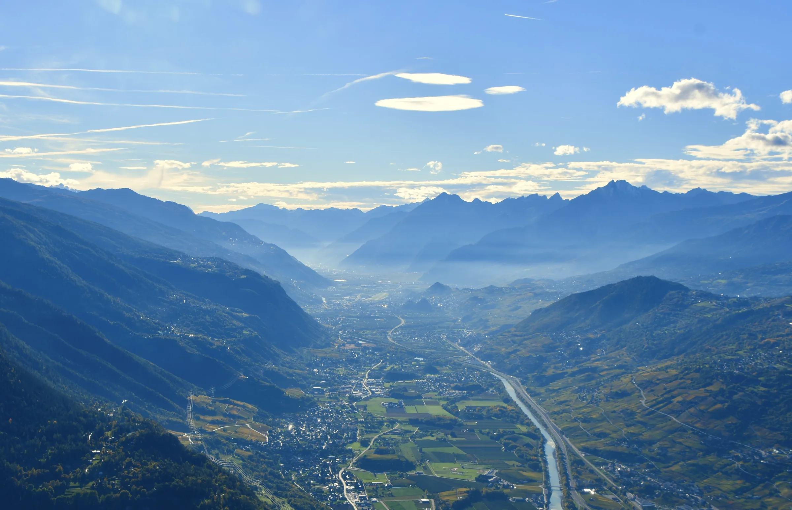
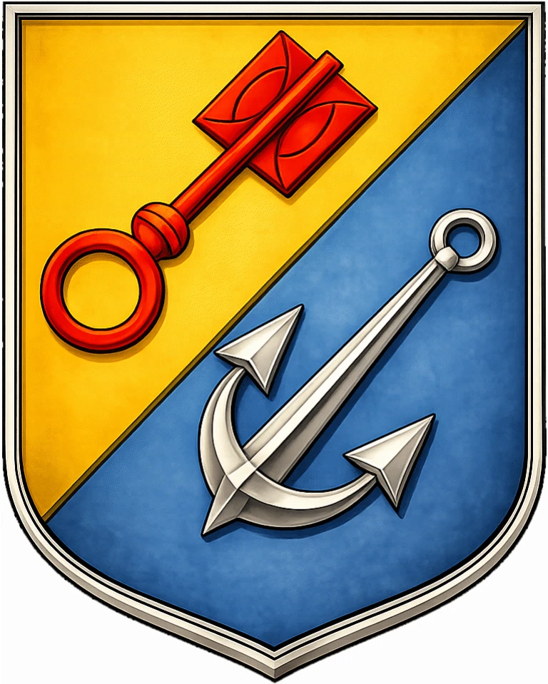

Investigación genealógica sobre la familia Clemenzo, originaria de Ardon, en el cantón de Valais, Suiza. Documentamos su emigración a la Argentina a fines del siglo XIX y los vínculos familiares a lo largo de generaciones.

Última entrada
Heráldica

familia Clemenzo